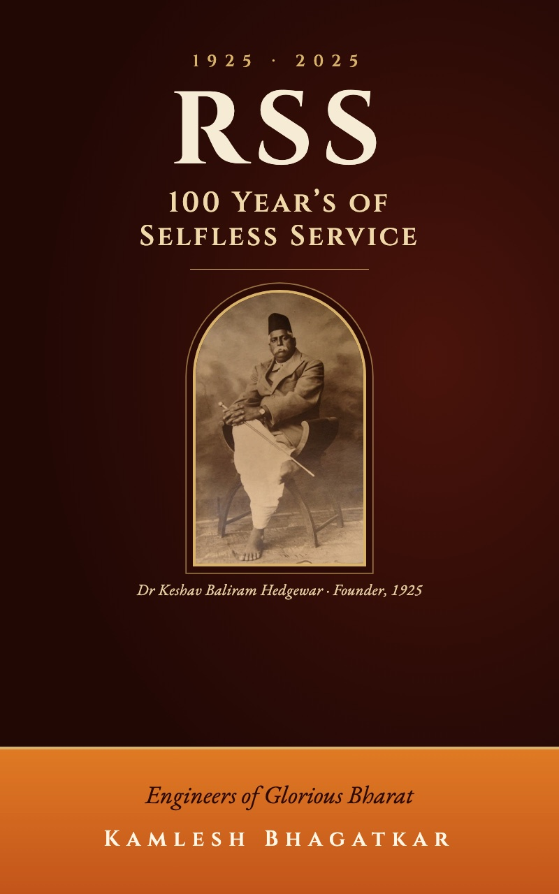

Published 2025
RSS: 100 Years of Selfless Service
The story of the Sangh's first century, told for readers aged 10 to 18, with sewa, or selfless service, at its centre: nation-building, cultural preservation and social reform across India.
Buy on Amazon →